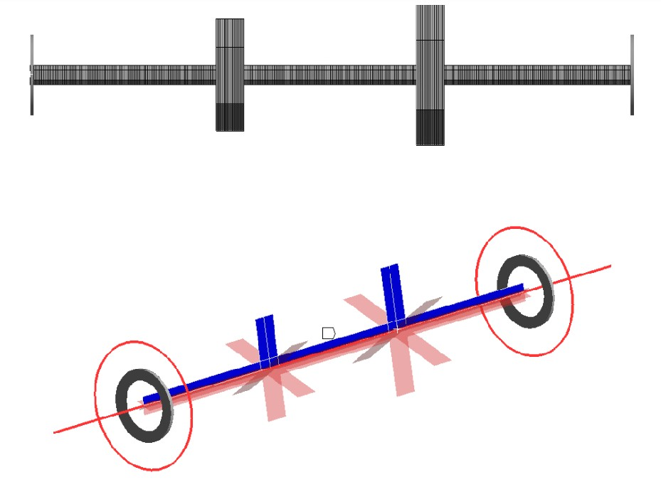

On the misinterpretation of structural damping in harmonic response of rotordynamic systems: commercial tools perspective
7th International Conference on Engineering Sciences (ICES 2024), Ankara, Turkey, February 2024. Conference Paper

Abstract
Structural or hysteresis damping is a mechanism for energy dissipation due to friction between internal planes as the material deforms. The hysteresis cycle of a material under cyclic loading predicts energy loss in vibration cycle. Rotating and stationary damping sources have different impacts on the rotordynamic systems since they experience different vibration frequencies relative to stationary reference frame. Accurate implementation of structural damping into the equation of motion of the rotordynamic system is of critical importance. This has caused misunderstandings in the rotordynamic literature regarding stability prediction. However, its effect on harmonic response is not clearly explained and even the most widely used commercial finite element software can yield misleading results. In this study, the equation of the motion of a rotordynamic system is provided by including structural damping. The finite element model of the system is developed by using complex vector notation which is necessary to account for structural damping correctly. Natural frequency, critical speed and harmonic response are obtained based on solving the developed model. Then, these results are compared to those of commercial software for undamped and structurally damped conditions. Results showed that commercial software cannot predict the harmonic behavior of the system accurately. An additional damping effect is included in the system due to the erroneous implementation of structural damping. This causes the underestimation of the harmonic response of the system and may result in unexpected vibrations during operation.